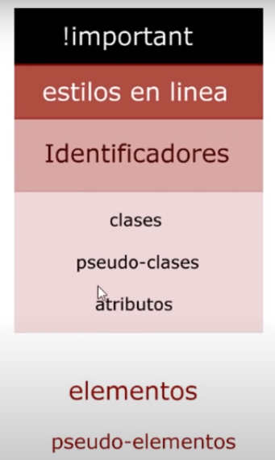
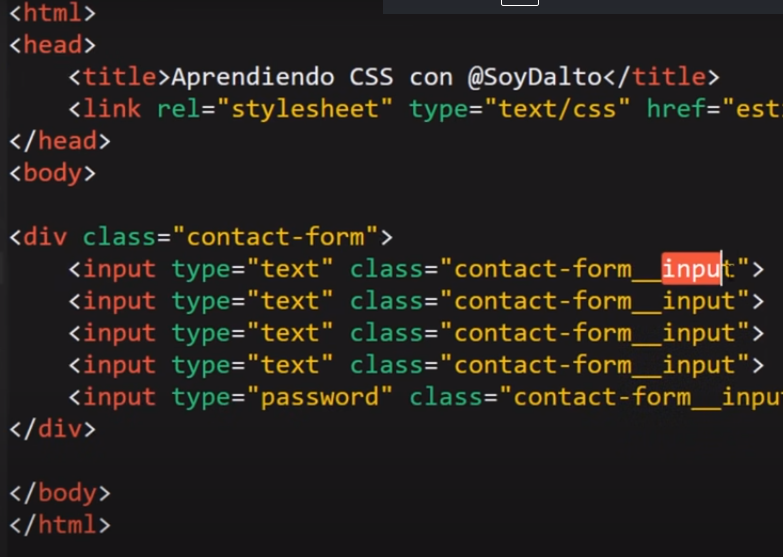
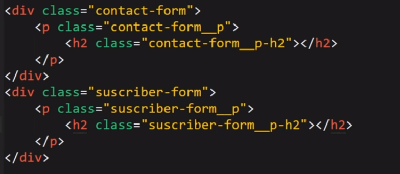

Trabajo CSS y HTML
Trabajo de aprendizaje con HTML y CSS
Hojas de estilo en cascada,sirve para agarrar la etiquetas de HTML y darle estilos (color, tamaño, forma, posicion (Diseño))
Lo que se hace con CSS es definir el estilo paso por paso en la cascada o codigo del HTML.
los estilos en linea se utlizan como atributo pero en HTML, donde tambien se puede hacer CSS, pero eso seria una mala identación, ademas por especificidad, el valor de los estilos varias y el mayor será el que domine el estilo y color en parrafos, siendo un problema para desarrollar
La forma correcta de trabajar CSS en html es dentro de la cabecera o HEAD, en la etiqueta LINK, definiendo en rel=con hoja de stili "styleshhet" en Type="text/css" y en href=la ruta donde el archivo se encuentra alojado. EJEMPLO:
ETIQUETA DE CSS
SELECTOR: Selecciona las etiquetas o propiedades de HTML. PROPIEDAD:la cualida o atributo que se quiere cambiar, como color, tamaño o letra valor,: se define segun la propiedad, el color, tamaño, forma entre otros. para HTML se define si utiliza todo el reglon con (display block ) o una parte con (display inline).
*: selector universal, emplea todo lo de la proiedad que va dentro de las llaves
En sleector, ademas del selector universal, tambien se puede especificar una parte del codigo. si es una etiqueta se designa el nombre de ella, por ejemplo (h1{....}), si es una classe se define con (.) y el nombre de la clase, con un id se inica con (#) y luego el nombre o id.
Para seleccionar por atributo se abre un corchete [] y dentro de este el nombre del atributo, lo demas es igual que con llaves.
si se desea cambiar por desendencia, se escribe el orden de las etiquetas. por ejempolo (h2)(p) {---}, de ese modo se especifica solo los P unicados en esa etiquetas. Para seleccion con seudoclases, el objetivo de esta es dar un funcionalidad con estilo al codigo, por ejemplo, si el cursos pasa por una palabra determinada, esta cambie de color.
Por ejemploo:
ESPECIFICIDAD
Los estilos en linea son con etiqueta (Style), se puede hacer varias selecciones segun la necesidad. se trabaja en el HTML, pero no se recomienda por identación porque entorpece el codigo el CSS y JS.
Es similar al orden operaiconal, se organiza segun la importancia o especificidad en este caso. Si seleciona dos con la misma importancia, gana el ultimo elemento en cascada
El importan se define de la sigueinte mannera. Por ejemplo:

METODOLOGIA BEM
BEM CSS es una metodología de nomenclatura para definir las clases en los nodos HTML del documento. Es decir, es una manera de nombrar las clases de los nodos de tu HTML para posteriormente atacarlos con CSS de una manera fácil, sencilla y clara.
para trabajar con la metologia BEM, se identica la caja con un nombre especifico y conforme va adentrando a la caja le suma la identificación de la etiqueta. Por ejemplo:

De esta forma se orgniza por bloque. teniendo en cuenta esta simbologia (nombre-form_nombre de etiqueta --nombre etiqueta consecutiva)

MEDIDAS
Para medidas de letras, hay dos tipos, las relativas y las absolutas. Se trabaja con relativas para adaptarse en moviles.
1em=16px, esto es por defecto en el navegador. pero si lo modicamos el em toma la medida desginada al inicio. por ejemplo:
.contact-form{
front.size:25px;
}
.contact-form{
front.size:5em;
}
De este modo, de este modo 1em toma el valor de 25px. y como son 5em este se multiplica por los 25px, para un total de 125px.
Propiedades de Texto
front-size:tamaño de letra en "em" "px".
font-family: tipografia o tipo de letra.para importar tipografia e iconos ingresamos a GoogleFonts
Para que tenga funcionalidad, se copia el link en la la cabezera del html como tittle, para tener diferentes tipo se define segun la caja o etiqueta.
line-height:nace en el centro de la letra y da espcio dentro del cuadro de la letra, como si fuera un encabezado y un piedepagina.
front-weight:grosor de la letra, se define en nuemro (400,700.900...).
front-stretch:dice que es unutil
front-variant:dice que es unutil
NORMALIZE
Es un codigo de css que ayuda a mejorar la visualizacion en el buscador y recetea lo comandos predeterminados de este.
TEORIA DE CAJAS
Hay dos tipos de cajas, las que son el linea y las que son en bloque, las que son en bloque son las mas importantes, siempre ajusta al ancho de su contenedor
el elemento en linea es solamente el contenido. podemos diferencialo en los sigueintes ejemplos: